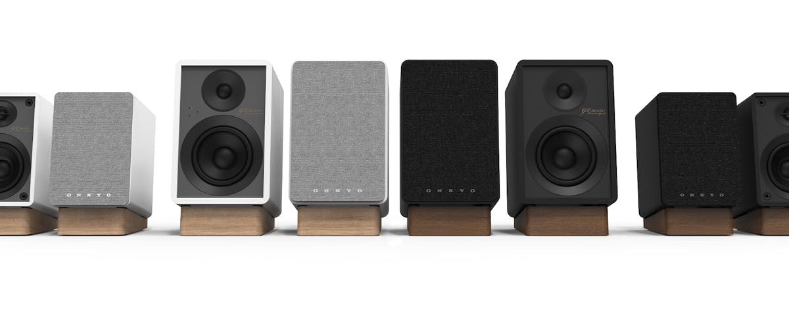

電腦與手機
兩款都可透過 USB-C 接電腦，或以 Bluetooth 接收手機音訊。官方規格與說明書確認的是 Bluetooth 5.3／SBC；產品頁另有 LE Audio 文案，但未在規格中確認 LC3，因此不將它列為已確認功能，也不保證藍牙無延遲。
Onkyo · Powered Desktop Speakers
把擴大機、數位輸入與唱盤輸入整合成一對小型喇叭，以桌面近場聆聽為起點；GX-30ARC 再加入 HDMI ARC，延伸至電視與小型客廳。
| 型號 | 定位 | 單體配置 | 頻率響應 | 輸出功率 | 訊源輸入 | 單支尺寸（寬 × 高 × 深） |
|---|---|---|---|---|---|---|
| GX-10DB | 小型桌面 電腦、近場音樂與唱盤 |
¾ 吋（19mm）高音 3 吋（76.2mm）低音 |
70Hz–20kHz 官方未註明 ±dB |
17W × 2 聲道 100Hz、1% THD |
USB-C、光纖、RCA Line／Phono、Bluetooth 5.3 無 HDMI、無 3.5mm AUX |
主：119 × 176 × 169mm 副：119 × 176 × 163mm |
| GX-30ARC | 桌面／電視 較大單體與 HDMI 整合 |
¾ 吋（19mm）高音 4 吋（101.6mm）低音 |
55Hz–20kHz 官方未註明 ±dB |
25W × 2 聲道 每聲道 LF 17W＋HF 8W，Bi-Amp |
HDMI ARC／CEC、USB-C、光纖、RCA Line／Phono、3.5mm AUX、Bluetooth 5.3 | 主：146 × 224 × 188mm 副：146 × 224 × 180mm |
功率與尺寸採 2025-10 英文說明書：GX-30ARC 的功率條件為 8Ω、HF 10kHz／LF 100Hz、雙聲道驅動、1% THD；GX-10DB 未在該項列出阻抗。這些是指定條件下的輸出，並非標示為 Peak 的功率。尺寸含網罩與背部凸出部分，未含腳座。
GX-10DB 官方 v02 規格單另列「30W Total System Power」，與說明書的 17W × 2 不一致；本頁保留此差異，不將兩個數字解讀為 RMS／Peak。頻率範圍未提供容差，不宜直接與其他系列的 ±3dB／±6dB 規格比較。
兩款都可透過 USB-C 接電腦，或以 Bluetooth 接收手機音訊。官方規格與說明書確認的是 Bluetooth 5.3／SBC；產品頁另有 LE Audio 文案，但未在規格中確認 LC3，因此不將它列為已確認功能，也不保證藍牙無延遲。
GX-30ARC 可使用電視的 HDMI ARC 端子，並支援 CEC；GX-10DB 則可用光纖接有對應輸出的電視。光纖與 GX-30ARC 的 ARC 都需使用雙聲道 PCM，電視數位音訊輸出應設為 PCM，不是 Dolby Digital、DTS 或 Atmos 解碼系統。
RCA 是同一組可切換 Line／Phono 的輸入，不能視為兩組獨立插孔。唱盤沒有內建唱頭放大時使用 Phono；已有唱頭放大或接一般線路訊源時使用 Line。GX-30ARC 另有 3.5mm AUX。
兩款都有單聲道 RCA Subwoofer Pre-out，可外接主動式重低音；不是直接推動被動重低音的喇叭輸出。官方未清楚列出分頻點與主喇叭高通行為，不能直接假定接上後就會替主喇叭切除低頻。
預設模式加強高低頻，Flat 模式取消這項強化；它不是麥克風量測或 Dirac 空間校正。可先利用隨附腳座調整朝向耳朵的角度，並為後方反射孔和接線保留空間。

GX-10DB、GX-30ARC 皆提供黑色與白色版本；選型重點仍是桌面占用、單體尺寸，以及是否需要 HDMI ARC。
兩款基本型號都有 80 週年版本，設計呼應 D-200 Liverpool，改用 Bordeaux Walnut 色表面、深銀色飾環、紋理黑色前障板與黑色傾斜腳座。官網連回同一組基本型號規格與說明書，沒有另列不同輸出性能，因此不當作新一級聲學規格。
官網已列出週年版產品頁，但各地供貨不同。CES 2026 另展示一體式 tabletop 喇叭概念；截至本頁查核，尚未查得可確認型號與完整規格的正式產品頁，因此未混入現有型號表。
Creator 系列、產品頁、規格表與說明書查核日期：2026-08-28。型號與供應範圍以當地官方資料為準。